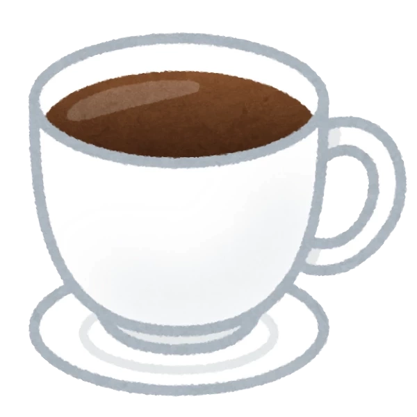
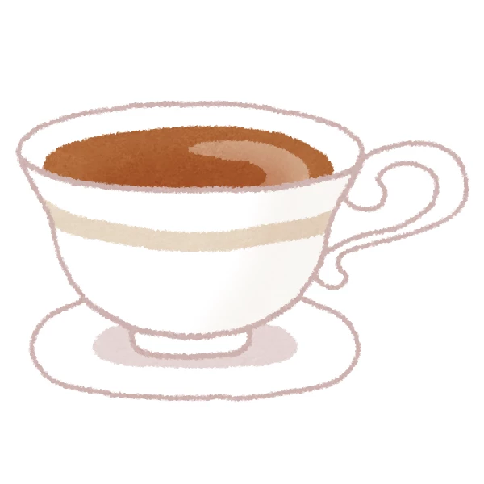

今天我们来学习人类语中有关于逻辑的词，这些词一般都在n行
仍然假定我们都有了“人类语.xlsx”，如果没有的话可以在主页的“相关文件”里下载。
其实就算不是最新版的.xlsx文件也行，因为除了新增词语和例句，这个文件的内容几乎是不变的。
所以根据.xlsx，人类语有如下的逻辑词：
与(na)，或(ni)，从句指示词(nu)，非(ne)，从属(no)
形容(non)，承接(nus)
至于像“因为”“所以”“虽然”“但是”这些词语，并不是很需要再成列一遍了。
说到这个词（字），学过数电的同学就发现了，这不是或门（Or gate）吗？
但这个与数电中的或门有微小的区别。
假如是“A 或门 B”，那么A,B同时为“真”（同时存在）也为“A 或门 B”的一种状态。
（抱歉上一句可能不是很直观，就是说，如果我同时吃土豆和番茄，我也可以说：我吃土豆“或门”番茄。）
但这里的只是一般口语中的“或”。（数电中的“异或”）
因为如果A,B同时为真，那就直接用好了。
说到从句指示词，我需要提一句。
人类语的从句是在所修饰的词后面的，副词也在后面，但形容词一般在前面。
看起来似乎很像英语的语法，不过确实是对于国际辅助语来说最好的选择了。
毕竟总不能为了标新立异而放弃最优解罢。
以上逻辑词里可能还会有疑问的是（承接词）
这是用来连接两个短句的。就是如果两个句子的主语相同，同时又可能有点递进关系，就要用这个词。
例如：“神畏惧人类的团结，让人类有了不同的语言。”
相当于英语中的and，法语的et，日语的て(?).
关于逻辑词的部分，已经讲完了。
不过，大家在看有关人类语的资料时，是否总是会看到方括号“[]”或拉丁转写里的“'”？
被方括号括起来或带有单引号的字只表音。
就像咖啡[]，读作“kohi”。
是冷的意思，是水的意思。
但[]并非冷水或者直译为冷水的词语，因为它被方括号括起来了，所以只是表音。
那么我们如何表达“冷水”呢。
这个时候，就要用到逻辑词形容了。
能够把字词转化为形容词，其实就类似于中文里的“的”，但是中文里的“的”兼具“从属”和“形容”的功能，人类语中，这两种功能拆开了。
以上就是第三课的全部内容，感谢观看。
0/0

咖啡
（感谢irasutoya，至少不像某些公司专门赚法律意识薄弱的人的钱）

茶